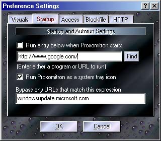

Here is where several of the Proxomitron's global settings can be changed. Click a tab and area for an explanation of its function.

The "StartUp" Tab
This controls what happens when you first run Proxomitron.
When Proxomitron starts your can optionally run another program along with it (like a web browser). Alternately you can have a specific web page load whenever the config file is selected (or the "Run Program or URL" button on the main screen is pressed). When used with a program, this provides a handy way to launch your browser along with the Proxomitron. When used with a URL it allows you to save config files that contain settings specially tailored to a website then launch that page whenever the config file is loaded. You can use this a bit like browser bookmarks to easily jump to a site with specific filters already in place.
If "Run entry below when Proxomitron starts" is checked the program/URL will be started automatically. If unchecked, The program/URL will only be run whenever the "Run application or URL" button is pressed on the main screen (or selected from the system tray context menu).
NOTE: This does not make Proxomitron start when you boot your computer. To do this simply create a window's Shortcut to Proxomitron in your StartUp folder.
Note that for no good reason at all the "Bypass URLs that match this expression" entry is also on this tab. This is a matching expression much like the URL match on many filters. However, this works for the whole shebang (well at least most of Northern Shebang anyway). Any URL(s) matched here will not be filtered by Proxomitron. By default, Proxomitron already has a call to the "BypassList" blockfile here - you'll probably want to leave this. To bypass a site automatically, just add it's URL to the BypassList file.
 Return to main index
Return to main index